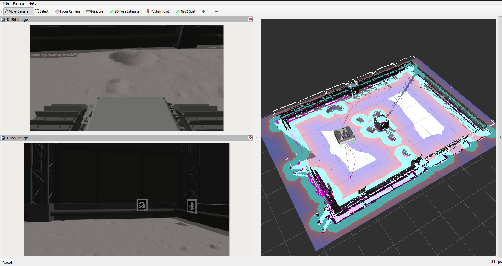
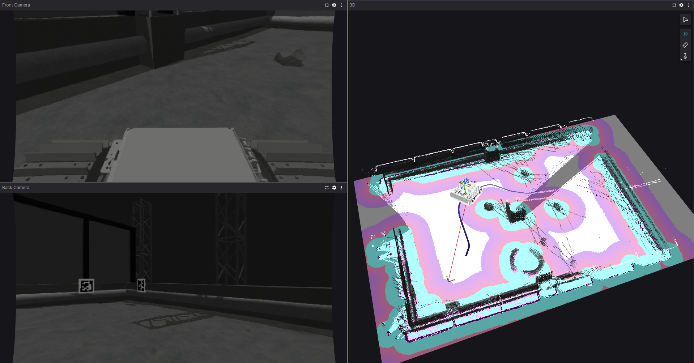

- Generated by
 1.9.1
1.9.1
|
Lunabotics-2025 Documentation
1.0
|
This repository contains the software developed by the College of DuPage team for the 2024-2025 NASA Lunabotics competition. It is built for ROS 2 Humble on Ubuntu 22.04.
Computer
Sensors
Hardware
Note: You will need to have already installed ROS 2 Humble before continuing with installation. The guide can be found here. Install both ros-humble-desktop and ros-dev-tools.
.bashrc is a script that runs everytime a new terminal window is opened and has various configurations, environment variables, and commands for setup. There is a bug in the VSCode terminal that will cause a symbol lookup error, so you have to unset the path variable using unset GTK_path. If you haven't already added source /opt/ros/humble/setup.bash to your .bashrc file, it simply runs the setup script for ROS 2 Humble.
This will permanently append these two lines to your .bashrc file, so there is no need to run it again. If you want to edit the file manually, use nano ~/.bashrc or gedit ~/.bashrc if you prefer a text editor GUI instead.
If you have previously cloned this repository and do not see anything in the folders located in lunabot_third_party after running git pull, run git submodule update --init --recursive --remote inside the Lunabotics-2025 folder to initialize the submodules.
Run the installation script to install the required dependencies. chmod +x gives permission for the script to be executable.
If you would prefer to use Foxglove Studio instead of RViz2 to visualize the robot, you can install it with:
Building may take some time due to the external packages in lunabot_third_party. Various flags such as -DRTABMAP_SYNC_MULTI_RGBD=ON need to be set to enable extra features for RTAB-Map.
To avoid building the entire workspace all over again after the initial build if you make changes, use colcon build --packages-select name_of_package and choose the package that you made changes to for rebuilding. You can list multiple packages after the --packages-select flag. You only need to rebuild the workspace if you modify a file for a compiled language such as C++ or add new files, the flag --symlink-install will automatically reflect the changes in Python, URDF, Xacro, and YAML files.
If your computer keeps crashing while trying to build, colcon build may be trying to do too many things at once. Setting this flag to -j1 limits each package's internal make jobs to 1 thread. You can either increase or reduce both this and --parallel-workers, increasing will make it build faster but may put more stress on your computer, leading to freezing.
Next, rebuild using the same commands in step 5. Build the workspace.
The launch files have various parameters that can be set, such as changing the robot model, autonomy level, and choosing between RViz2 and Foxglove Studio for visualization. If you are using the parameter visualization_type:=foxglove, refer to the Foxglove guide for connecting in the app. You can import the same layout I used by choosing Import from file... under the LAYOUT menu and selecting foxglove_layout.json from this directory. A detailed list of the parameters can be found in this section here.
There are two robot_mode options for simulating the robot: manual and autonomous.
This launches a teleop node for controlling the Gazebo robot with either a keyboard or Xbox controller along with Nav2 and RTAB-Map, but does not launch the localization_server or navigation_client. In this mode, you can drive the robot around, map the arena, and play around with setting Nav2 goals in RViz2/Foxglove Studio.
This launches localization_server and navigation_client and will not allow the user to teleop the robot. Instead, it will follow the commands from the localization server and navigation client to perform a one-cycle autonomy sequence.


SSH (Secure Shell) allows you access another device over the network and run commands. The host computer is the computer that you are personally interfacing with, such as laptop. For any future steps that require being ran on the robot computer, you will need to be connected via SSH.
This will return the username of the robot computer, although you can also see the username just by looking at the terminal. It is the first name before the @, for example, the username would be grayson for grayson@NUC.
Next, get the IP address:
The IP address is the first set of numbers in the list.
Using the username and IP address from the previous step, now you can connect to the robot computer. It may look something like this for example:
It will ask you if you are sure you want to connect, type yes. Then, confirm by typing in the robot computer's password.
Use ls /dev/ttyUSB* to identify device numbers if the lidars are disconnected and reconnected, then adjust the lidar "serial_port" parameters in real_launch.py accordingly.
Make sure all cameras are unplugged while setting up the udev rules.
robot_mode: Selects the mode of operation.
manual: Runs the robot in manual mode. **(Default)**autonomous: Runs the robot in autonomous mode. Example: robot_mode:=autonomousrobot_type: Specifies the robot model to visualize.
bulldozer: Visualizes the bulldozer robot. **(Default)**trencher: Visualizes the trencher robot.Example: robot_type:=trencher
robot_orientation: Sets the initial orientation of the robot in Gazebo.
north: Points the robot north.south: Points the robot south.east: Points the robot east. **(Default)**west: Points the robot west.random: Assigns a random orientation.Example: robot_orientation:=random
visualization_mode: Specifies whether to launch Gazebo or not.
simulation: Launches simulated robot in Gazebo. **(Default)**real: Only launches RViz2 or Foxglove Studio instead of Gazebo, will receive data from real hardware.Example: visualization_mode:=real
visualization_type: Choose between RViz2 or Foxglove Studio for visualization.
rviz: Opens visualization in RViz2. **(Default)**foxglove: Launches Foxglove bridge to allow for connecting in the Foxglove Studio app.Example: visualization_type:=foxglove
gazebo_gui: Enables or disables the Gazebo GUI.
true: Runs Gazebo with its GUI. **(Default)**false: Runs Gazebo in headless mode, may be useful if your computer has limited resources.Example: gazebo_gui:=false
robot_type: Defines which robot model parameters to use for Nav2.
bulldozer: Defines parameters for the bulldozer robot. **(Default)**trencher: Defines parameters the trencher robot.Example: robot_type:=trencher
robot_mode: Selects the mode of operation.
manual: Runs the robot in manual mode. **(Default)**autonomous: Runs the robot in autonomous mode. Example: robot_mode:=autonomousteleop_mode : Chooses the teleoperation method.
keyboard: Uses keyboard for teleoperation. **(Default)**xbox: Uses Xbox controller for teleoperation.Example: teleop_mode:=xbox
lunabot_bringup: This package contains launch files to bring up autonomy nodes, Gazebo simulation, and real world hardware.
lunabot_config: This package contains configuration files for Nav2 behavior trees, RViz2 settings, and various parameters.
lunabot_simulation: This package contains assets and code for simulating the robot in Gazebo.
lunabot_system: This package contains various autonomy/manual controllers and utilities.
/cmd_vel commands and /joy inputs into physical motor speed outputs.lunabot_third_party This folder contains third party packages.
scripts: This folder contains various setup and utility scripts.